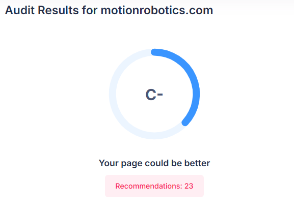
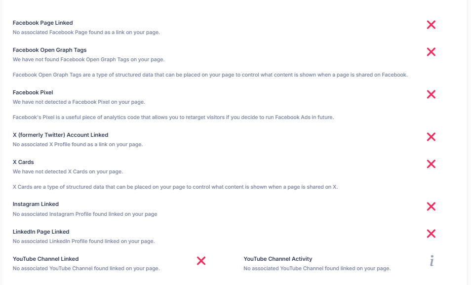

Std 12th IT Subject (Commerce Stream)
Assume that you are appointed as a Digital Marketing Expert for a company named XYZ Marketing Private Ltd. They have a website hosted on a web server. Suggest your client changes needed in the website to improve the speed of website and also make him aware about the following:
Ans: 23
Ans: Not Present
Ans: No
